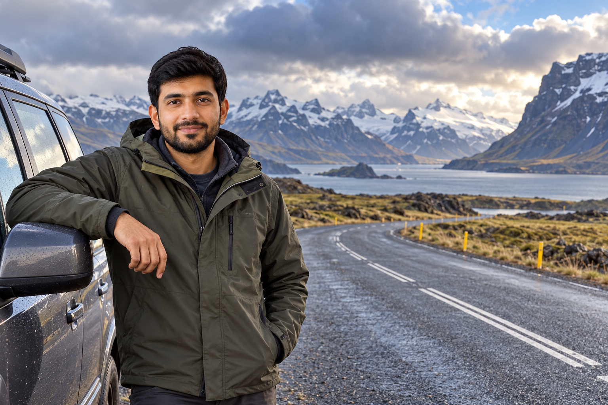
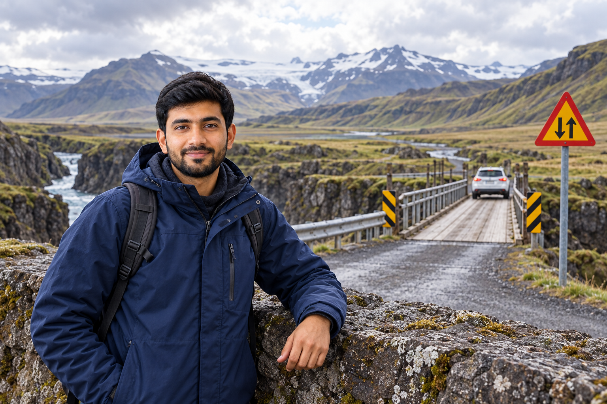
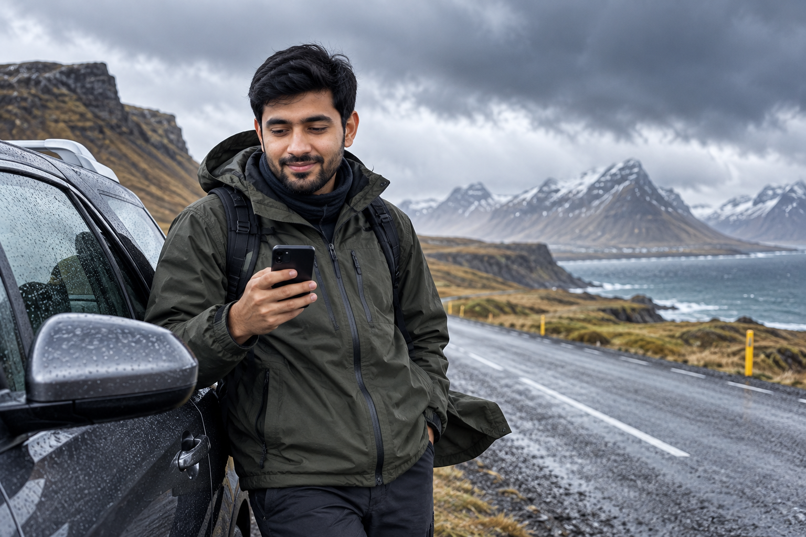

Driving in Iceland: Road Rules, Weather and Safety
Driving is one of the best ways to explore Iceland, but the roads can feel different from what first-time visitors are used to at home. The challenge is not usually heavy traffic. It is the combination of changing weather, strong wind, gravel, narrow bridges, animals near the road, long rural stretches, and drivers becoming distracted by the landscape.
The basic traffic rules are straightforward, but following the posted speed limit is only part of safe driving. A road marked 90 km/h may require a much slower speed when there is rain, ice, strong wind, poor visibility, or loose gravel. Icelandic authorities repeatedly tell drivers to adjust their speed to the actual conditions rather than treating the legal limit as a target.
This guide explains the road rules, weather risks, road types, warning signs, and safety habits first-time visitors need for a self-drive trip. For deciding whether you should drive at all or use buses, tours, or domestic flights instead, see How to Get Around Iceland: Car, Bus, Tours and Domestic Flights.
Is Driving in Iceland Difficult?

It depends on:
- ✓Season
- ✓Route
- ✓Weather
- ✓Your driving experience
During favorable summer conditions, major tourist routes can feel relatively straightforward.
Examples include:
- ✓Golden Circle
- ✓Main South Coast
- ✓Ring Road
But even these roads can become more demanding because of:
- ✓Strong wind
- ✓Heavy rain
- ✓Fog
- ✓Gravel
- ✓Animals
- ✓Blind hills
- ✓Single-lane bridges
Winter adds:
- ✓Snow
- ✓Ice
- ✓Darkness
- ✓Reduced visibility
- ✓Road closures
The best question is therefore not:
“Is driving in Iceland easy?”
It is:
“Are today's road and weather conditions suitable for this route and my experience?”
That question should guide every self-drive day.
Which Side of the Road Do You Drive On in Iceland?
In Iceland, you drive on the:
right-hand side of the road.
The driver sits on the left side of most normal rental vehicles.
Travelers arriving from countries that drive on the left should take extra care during the first hours.
Be particularly careful:
- ✓Leaving car parks
- ✓Entering roundabouts
- ✓Turning after stops
- ✓Returning to an empty rural road
When traffic is light, it can be easier to fall back into your normal driving habit.
What Driving Licence Do You Need?
Bring your:
valid driving licence from home
and confirm the rental company's document requirements before departure.
Requirements can depend on:
- ✓Country that issued the licence
- ✓Language/script on the licence
- ✓Vehicle type
- ✓Rental company
If your licence is not easily readable in Latin characters, your rental company may require:
- ✓International Driving Permit
- ✓Official translation
in addition to the original licence.
Do not wait until the rental desk to discover that an additional document is required.
Is an International Driving Permit a Replacement for Your Licence?
No.
An International Driving Permit is normally used alongside:
your original valid driving licence.
It is not a standalone licence.
Iceland Speed Limits
Road signs always control the actual limit.
The common maximum limits are:
| Road Type | Common Maximum Speed |
|---|---|
| Urban roads | 30–50 km/h |
| Rural gravel roads | 80 km/h |
| Rural paved roads | 90 km/h |
These are:
maximum legal speeds under suitable conditions.
They are not speeds you must maintain.
The Speed Limit Is Not a Target
This may be the most useful driving rule in Iceland.
A road may legally allow:
90 km/h
while the safe speed that day is:
- ✓70 km/h
- ✓50 km/h
- ✓Lower
because of:
- ✓Snow
- ✓Ice
- ✓Heavy rain
- ✓Strong wind
- ✓Fog
- ✓Traffic
- ✓Animals
- ✓Poor visibility
Icelandic traffic law requires drivers to adjust speed to:
- ✓Road condition
- ✓Weather
- ✓Visibility
- ✓Vehicle
- ✓Traffic
If you cannot safely stop within the section of road you can see:
you are driving too fast for the conditions.
Speed Cameras in Iceland
Speed enforcement includes:
- ✓Police
- ✓Speed cameras
Automatic cameras operate in areas where speeding and accidents are concerns.
A camera fine is normally sent to the:
registered owner of the vehicle.
With a rental vehicle, this can ultimately reach the renter through the rental company.
Do not assume remote roads mean:
no speed enforcement.
Should You Drive Exactly 90 km/h on the Ring Road?
No.
Use 90 km/h only when:
- ✓That is the posted limit
- ✓Road is paved
- ✓Visibility is good
- ✓Weather permits
- ✓Traffic and road surface permit
If conditions are poor:
slow down.
A driver behind you does not determine your safe speed.
Headlights Must Be On All the Time
Vehicle lights must be used:
all year, during every journey.
This applies even during:
- ✓Bright summer daylight
- ✓Clear weather
Do not assume the car's automatic setting is enough.
Some vehicles automatically turn on:
- ✓Front daytime running lights
without correctly illuminating:
- ✓Rear lights
Iceland's official guidance specifically warns drivers to check this.
What Should You Do at Rental Pickup?
Before leaving:
- ✓Find the light controls.
- ✓Turn on the correct driving lights.
- ✓Confirm the rear lights are also on.
Do this while parked.
Seat Belts Are Required for Everyone
The driver and all passengers must wear:
seat belts.
That includes:
- ✓Front seats
- ✓Rear seats
Do not remove your seat belt because:
- ✓Road is quiet
- ✓You are moving slowly
- ✓You are only driving a short distance
The rule applies throughout the trip.
Child Car Seats
Children under:
135 cm
must use an appropriate child-restraint system suited to their:
- ✓Age
- ✓Height
- ✓Weight
If renting a child seat:
confirm it before arrival.
Do not assume:
- ✓Correct size
- ✓Availability
will be guaranteed at the rental desk without a reservation.
Phone Use While Driving
Using a phone or tablet while driving is prohibited unless used through an appropriate:
hands-free setup.
The practical rule is simple:
set everything before moving.
Before leaving the parking area:
- ✓Enter destination
- ✓Mount phone
- ✓Connect charger
- ✓Start navigation
If something needs changing later:
- ✓Passenger changes it
- ✓Or driver stops safely
Do not:
- ✓Hold the phone
- ✓Type an address
- ✓Read messages
- ✓Film scenery
while driving.
Taking Photos While Driving
Iceland is particularly dangerous for distracted driving because the scenery constantly pulls your attention away from the road.
You may suddenly see:
- ✓Glacier
- ✓Waterfall
- ✓Mountain
- ✓Horse
- ✓Ocean
- ✓Northern Lights
The driver should continue driving.
If you want the photograph:
find a safe legal place to stop.
Do Not Stop in the Road for Photos
SafeTravel specifically warns visitors against stopping:
- ✓In the road
- ✓On an unsafe shoulder
for photographs.
This can be dangerous near:
- ✓Blind hills
- ✓Curves
- ✓Narrow roads
Another driver may not see your vehicle until it is too late.
Better Approach
Continue until you find:
- ✓Parking area
- ✓Viewpoint
- ✓Safe pull-off
Missing one photograph is irrelevant compared with causing a collision.
Alcohol and Driving
Iceland has a very low alcohol limit.
Official Icelandic driving guidance uses a blood-alcohol threshold of:
0.2‰
for safe driving.
The practical advice is even simpler:
If you are driving, do not drink alcohol.
Do not try to calculate:
- ✓Number of drinks
- ✓Body weight
- ✓Time since dinner
around such a low limit.
Choose:
- ✓Driver
- ✓Taxi
- ✓Walking
- ✓Bus
before drinking.
Drugs and Medication
Driving while impaired by:
- ✓Illegal drugs
- ✓Other substances that affect driving ability
is prohibited.
Prescription or over-the-counter medicine can also cause:
- ✓Drowsiness
- ✓Slower reaction
- ✓Reduced concentration
Read warnings and ask a medical professional or pharmacist when necessary.
Do not drive if medication makes you unsafe.
Roundabouts in Iceland
Roundabouts can surprise foreign visitors because Iceland has an important priority rule:
the inner lane has priority when exiting.
The vehicle in the outer lane must not block a vehicle exiting from the inner lane.
This can differ from the system you know at home.
How to Approach a Two-Lane Roundabout
Before entering:
- ✓Choose the appropriate lane
- ✓Watch existing traffic
- ✓Understand your exit
Once inside, remember that:
inner-lane traffic has priority when leaving the roundabout.
Do not drive beside an inner-lane vehicle and assume you automatically have the right to continue around.
Use Indicators
Signal properly when:
- ✓Changing lane
- ✓Exiting
Do not make sudden movements because you realize your exit is approaching.
If you miss an exit:
continue safely.
Do not cut across another vehicle.
Roundabouts in Reykjavík and Akureyri
You are more likely to encounter multi-lane roundabouts around populated areas than on remote rural roads.
If you are unfamiliar with Iceland's rule:
review it before leaving the rental lot.
It is much easier to understand while parked than while entering traffic.
Single-Lane Bridges

Single-lane bridges remain part of Icelandic rural driving.
A warning sign tells you that the bridge ahead is too narrow for normal two-way traffic.
SafeTravel currently advises approaching these bridges at:
50 km/h or slower as conditions require.
Who Has Priority on a Single-Lane Bridge?
The basic principle is:
the vehicle that reaches the bridge first goes first.
But do not turn this into a race.
Approach slowly.
Watch what the other driver is doing.
If there is any doubt:
yield.
A few seconds make no meaningful difference to the trip.
Never Race Toward a Bridge
If another car is approaching from the opposite direction:
- ✓Slow down early
- ✓Assess who is closer
- ✓Be prepared to stop
Do not accelerate because you think:
“I can get there first.”
That is exactly the wrong behavior for a narrow bridge.
Blind Hills
Some rural Icelandic roads have:
blind crests
where you cannot see approaching traffic beyond the hill.
This is particularly important on:
- ✓Narrow roads
- ✓Gravel roads
Stay:
well to the right
and slow down.
Do not drift toward the center because the road looks empty.
Blind Curves
The same principle applies to curves.
You may not see:
- ✓Oncoming vehicle
- ✓Animal
- ✓Cyclist
- ✓Stopped traffic
until late.
Drive at a speed that allows you to react within the visible section of road.
Gravel Roads
Many visitors are surprised by gravel.
Although much of Route 1 is paved, gravel roads remain common on:
- ✓Rural routes
- ✓Regional detours
- ✓Access roads
The biggest danger often occurs where:
pavement suddenly becomes gravel.
Slow Down Before the Gravel Begins
Do not wait until the tires are already on loose stones.
Reduce speed before the surface transition.
Why?
A vehicle can lose:
- ✓Grip
- ✓Stability
when entering loose gravel too quickly.
Gravel Speed Limit Does Not Mean Safe Gravel Speed
The common rural gravel limit is:
80 km/h.
That does not mean every gravel road is safe at 80.
Your appropriate speed may be much lower depending on:
- ✓Width
- ✓Surface
- ✓Curves
- ✓Potholes
- ✓Weather
- ✓Other vehicles
Drive the road you actually have.
Meeting Another Car on Gravel
Rural gravel roads may be narrow.
When another vehicle approaches:
- ✓Slow down
- ✓Keep safely to the right
- ✓Give adequate space
Loose stones can also cause:
- ✓Windshield damage
- ✓Paint damage
Another reason not to pass or meet vehicles at excessive speed.
Gravel Shoulders on Paved Roads
Even when the main road is paved, the shoulder may contain loose gravel.
Do not let wheels suddenly drop onto the shoulder at high speed.
If that happens:
- ✓Avoid panic steering
- ✓Reduce speed safely
- ✓Regain control gradually
Abrupt steering can make the situation worse.
Animals on Icelandic Roads
Sheep are common in rural Iceland.
You may also encounter:
- ✓Horses
- ✓Cattle
near roads.
Never assume an animal will stay where it is.
Sheep Can Cross Suddenly
A common situation is:
- ✓Sheep on one side
- ✓Lamb on the other
When a vehicle approaches, one may suddenly cross to reunite with the other.
SafeTravel specifically warns drivers about this.
What Should You Do?
When livestock is near the road:
- ✓Slow down
- ✓Watch carefully
- ✓Be prepared to stop
Do not:
- ✓Speed past
- ✓Sound the horn aggressively
- ✓Assume the animal sees you
Wildlife and Birds
Depending on region and season, other animals may also appear near roads.
Examples include:
- ✓Reindeer in East Iceland
- ✓Birds near coastal areas
Slow down when wildlife is close to the road.
Do not stop dangerously to photograph it.
Off-Road Driving Is Illegal
This is one of Iceland's most important driving rules.
Driving away from established:
- ✓Roads
- ✓Tracks
onto untouched land is prohibited.
That remains true even if the landscape looks like:
- ✓Empty gravel
- ✓Sand
- ✓Moss
- ✓Bare ground
Why Off-Road Driving Causes Serious Damage
Icelandic vegetation and soil can be fragile.
Vehicle tracks can:
- ✓Damage moss
- ✓Erode soil
- ✓Remain visible for years
Some damage may take an extremely long time to recover.
Stay on legal roads.
F-Road Driving Is Not the Same as Off-Road Driving
An F-road is still:
a road.
Driving along a legal F-road is not off-road driving.
Leaving that road and driving across open terrain is.
Do not confuse the two.
Can You Follow Existing Tire Tracks Off the Road?
No.
Another driver's illegal tracks do not create a legal road.
Stay on:
- ✓Marked roads
- ✓Recognized tracks
Do not follow tire marks across open land simply because someone else already did it.
Respect Closed Roads
If a road is marked:
Lokað
it means:
closed.
Do not drive around:
- ✓Barrier
- ✓Closure sign
because the first section looks fine.
The danger may be:
- ✓Several kilometres ahead
- ✓Beyond a hill
- ✓In a mountain pass
SafeTravel specifically states that roads are not closed without an urgent reason.
Google Maps Does Not Decide Whether a Road Is Open
Navigation apps are useful for:
- ✓Directions
- ✓Distance
- ✓General routing
They may not accurately reflect:
- ✓Road closure
- ✓Impassable snow
- ✓Dangerous conditions
Use official Iceland road information for:
whether the road is actually usable.
Navigation answers:
“Where does this road go?”
Road-condition services answer:
“Can I safely drive it now?”
Those are different questions.
Do Not Drive When Tired
Driver fatigue matters particularly in Iceland because visitors often:
- ✓Arrive after overnight flights
- ✓Drive long sightseeing days
- ✓Stay out late in summer daylight
- ✓Chase Northern Lights at night
SafeTravel specifically warns against driving tired.
Arrival-Day Fatigue
Landing at KEF at:
6:00 AM
does not mean you have gained a full fresh sightseeing day.
If you did not sleep well on the flight, a long drive immediately after arrival can be unsafe.
Use arrival day for:
- ✓Reykjavík
- ✓Short route
- ✓Rest
rather than beginning the hardest driving section.
Long Summer Daylight Can Hide Fatigue
During summer, the sky may still be bright late at night.
Your body can still be:
exhausted.
Do not use daylight as a measure of how long you should continue driving.
Northern Lights and Driver Fatigue
During darker seasons, another problem appears.
You may:
- ✓Drive all day
- ✓Chase aurora at night
- ✓Start early next morning
After several days, fatigue accumulates.
If the Northern Lights appear far away but you are tired:
stay at the hotel.
No aurora photograph is worth unsafe driving.
Switch Drivers When Possible
If two qualified drivers are on the rental agreement:
share longer routes.
If you travel alone:
build shorter days.
Do not try to match the schedule of a group that has two or three drivers.
The Core Rule for Driving in Iceland
Before every driving day, ask:
- ✓What is the weather?
- ✓What are the road conditions?
- ✓Is the route open?
- ✓Am I rested?
- ✓Is my vehicle appropriate?
- ✓Do I have enough time?
If any answer creates doubt:
change the plan.
The itinerary is not more important than the conditions.
Weather Can Change a Safe Road Into a Difficult Road
Weather is one of the biggest differences between driving in Iceland and following a normal road-trip itinerary elsewhere.
You may leave your hotel with:
- ✓Clear sky
- ✓Dry road
- ✓Light wind
and meet:
- ✓Heavy rain
- ✓Fog
- ✓Snow
- ✓Ice
- ✓Strong crosswinds
later in the same drive.
This is especially important when your route crosses:
- ✓Mountain passes
- ✓Open plains
- ✓Exposed coastline
- ✓Higher ground
Do not assume conditions at your hotel represent the entire route.
Check Weather and Roads Separately
You need two different pieces of information.
Weather
This tells you about:
- ✓Wind
- ✓Rain
- ✓Snow
- ✓Visibility
- ✓Forecast changes
Road Conditions
This tells you what is happening on the actual road.
That may include:
- ✓Ice
- ✓Snow
- ✓Difficult driving
- ✓Closure
- ✓Winter service
- ✓Traffic restrictions
Checking only the weather forecast is not enough.
Checking only Google Maps is not enough.
Use Iceland's Official Road Information
The Icelandic Road and Coastal Administration provides current road information through:
umferdin.is
Use it before each major driving day.
The service includes:
- ✓Road conditions
- ✓Closures
- ✓Weather measurements
- ✓Traffic information
- ✓Road cameras
The cameras are particularly useful.
A written forecast might tell you:
snow is possible.
A road camera can help you see what the road actually looks like at a specific point.
Do Not Read Only the Route Color
Road-condition maps use visual categories to help show changing conditions.
But do not make the mistake of seeing one color and assuming:
“The whole road is fine.”
Open the relevant road section and read:
- ✓Current condition
- ✓Closure information
- ✓Weather
- ✓Nearby camera
A long road can pass through several different conditions.
Road Information Is Updated, but Conditions Can Change Faster
Official road information is actively updated.
But Icelandic weather can change between updates.
This means:
official information + what you see outside
should work together.
If the road in front of you is much worse than expected:
slow down or stop.
Do not continue just because a website looked fine an hour earlier.
Wind Is One of Iceland's Biggest Driving Risks

Visitors often think first about:
snow.
Strong wind can be just as important.
Wind affects:
- ✓Vehicle stability
- ✓Steering
- ✓Car doors
- ✓Visibility
- ✓Blowing snow
- ✓Driving fatigue
The risk is especially important for:
- ✓Campervans
- ✓Motorhomes
- ✓Tall vans
- ✓High-profile SUVs
because more vehicle surface is exposed to crosswinds.
Crosswinds Can Push the Vehicle Sideways
On exposed roads, a strong gust can move the vehicle toward:
- ✓Center line
- ✓Shoulder
You may feel this particularly when:
- ✓Leaving a sheltered area
- ✓Passing an opening between hills
- ✓Crossing an exposed plain
- ✓Driving beside the coast
Keep both hands ready to control the vehicle.
Slow down.
Do not make sudden steering corrections.
Watch for Sudden Wind Changes
A road may feel calm because a mountain or building is blocking the wind.
Then you pass beyond that shelter.
The full crosswind suddenly hits the vehicle.
This can happen near:
- ✓Hills
- ✓Cliffs
- ✓Bridges
- ✓Buildings
- ✓Large vehicles
Be prepared for the change.
Wind and Campervans
Campervans deserve extra caution.
A wind speed that feels manageable while standing outside can have a much larger effect on a tall vehicle.
If official warnings or local conditions indicate that your vehicle should not continue:
do not continue.
A road being technically open does not mean:
every vehicle is equally suitable for it.
Car Doors and Strong Wind
Strong wind can damage a rental-car door.
SafeTravel specifically teaches drivers to consider wind direction before opening the vehicle.
A safer approach is:
- ✓Park with the vehicle positioned sensibly against the wind when possible.
- ✓Hold the door firmly.
- ✓Open one door at a time.
- ✓Do not let children throw doors open.
A powerful gust can pull the door out of your hand.
That can cause expensive damage.
Do Not Open Both Sides at Once in Severe Wind
When possible, keep control of:
- ✓One door
- ✓One person
at a time.
This sounds like a small detail.
It can matter significantly in an exposed parking area.
Rain Changes More Than Visibility
Icelandic rain can create:
- ✓Reduced visibility
- ✓Standing water
- ✓Slippery road surfaces
- ✓Spray from other vehicles
Slow down before the situation becomes uncomfortable.
Increase Following Distance
Wet roads require more stopping distance.
Do not follow another vehicle closely because:
- ✓You know the route
- ✓Traffic is light
You still need time to react if the vehicle ahead:
- ✓Brakes
- ✓Avoids an animal
- ✓Slows for gravel
- ✓Stops for traffic
Watch for Water on the Road
Standing water can increase the risk of losing tire contact with the road surface.
If you encounter heavy water:
- ✓Reduce speed smoothly
- ✓Avoid sudden steering
- ✓Avoid hard braking
Do not enter a large water-covered section at normal road speed when you cannot judge:
- ✓Depth
- ✓Surface underneath
Fog Can Make a Familiar Road Feel Completely Different
Fog is especially important in:
- ✓Mountain areas
- ✓Coastal roads
- ✓Higher routes
Visibility can fall quickly.
When that happens:
- ✓Slow down
- ✓Use appropriate lights
- ✓Increase following distance
- ✓Stay well within your lane
Do Not Follow the Car Ahead Too Closely
When visibility drops, drivers sometimes use the vehicle ahead as a guide.
That can create:
unsafe following distance.
If that driver suddenly brakes:
you may have no space.
Use road markings and safe speed instead.
High Beams in Fog Can Make Visibility Worse
Bright light can reflect back through:
- ✓Fog
- ✓Snow
and reduce what you can see.
Use the appropriate lighting for the conditions.
Do not assume:
more light = better visibility.
Winter Conditions Can Appear Outside Midwinter
Do not think of winter driving as only:
December to February.
SafeTravel warns that winter-type road conditions may occur during:
- ✓Spring
- ✓Autumn
- ✓Winter
That means a traveler in:
- ✓April
- ✓October
should not plan using summer driving assumptions.
Even September or May can produce difficult conditions in some regions.
Snow Is Only One Winter Problem
Winter driving can involve:
- ✓Packed snow
- ✓Ice
- ✓Black ice
- ✓Blowing snow
- ✓Slush
- ✓Reduced visibility
- ✓Strong wind
- ✓Road closures
The road may look mostly clear while shaded or exposed sections remain icy.
Black Ice
Black ice can be difficult to see because it may look like:
- ✓Wet pavement
- ✓Normal dark asphalt
It is particularly dangerous around:
- ✓Bridges
- ✓Shaded sections
- ✓Early morning
- ✓Evening
- ✓Freezing conditions
If conditions suggest ice:
assume traction may be limited.
How to Drive on Ice
The main principle is:
everything becomes gentler.
Use:
- ✓Lower speed
- ✓Smooth steering
- ✓Gradual braking
- ✓Gradual acceleration
Avoid:
- ✓Sudden braking
- ✓Sharp turns
- ✓Fast lane changes
Traction can disappear quickly.
Increase the Gap Dramatically
Normal following distance may not be enough on:
- ✓Snow
- ✓Ice
Give yourself significantly more room.
You cannot rely on the car stopping where it would on dry pavement.
What If the Car Starts to Slide?
The exact response depends on:
- ✓Vehicle
- ✓Direction of slide
- ✓Drive system
- ✓Conditions
The most important prevention is:
- ✓Lower speed
- ✓Smooth inputs
- ✓More distance
Do not wait until the vehicle is sliding to decide you are driving too fast.
Do You Need Winter Tires?
Your vehicle should have tires suitable for the conditions in which you will drive.
For winter travel, confirm this with the rental company.
SafeTravel's winter-driving guidance specifically emphasizes:
- ✓Choosing the right vehicle
- ✓Proper winter tires
- ✓Having appropriate winter-driving experience
Do not assume:
4WD means winter tires do not matter.
Traction still depends heavily on the tires.
Studded Tires
Studded tires are widely used during Icelandic winter conditions.
However, regulations and enforcement around seasonal use can depend on:
- ✓Date
- ✓Current conditions
For a rental vehicle, you generally do not need to manage tire changes yourself.
What you do need to confirm is:
Is this vehicle properly equipped for the conditions I will face?
4WD Does Not Shorten Your Braking Distance Like Magic
Four-wheel drive can help the vehicle:
- ✓Move
- ✓Gain traction
It does not remove the laws of physics when you need to:
- ✓Stop
- ✓Turn
A 4WD vehicle can still slide on ice.
Drive according to conditions.
Snowplows Do Not Mean the Road Will Be Clear All Day
The Icelandic Road and Coastal Administration provides winter service on national roads.
But not every road receives:
- ✓The same service
- ✓Every day
- ✓At the same frequency
Some routes have more frequent winter service than others.
Remote roads may have:
- ✓Limited service
- ✓No winter service
This is one reason you should check the actual route rather than assuming:
“It is a numbered road, so somebody must clear it.”
A Recently Cleared Road Can Become Snowy Again
Wind can move snow across a road very quickly.
Even after plowing:
- ✓Drifting snow
- ✓Fresh snowfall
can change conditions again.
Do not treat a snowplow track as a guarantee that the road remains easy.
Driving Behind a Snowplow
If you encounter road-service machinery:
keep a safe distance.
Snowplows may create:
- ✓Snow spray
- ✓Poor visibility
Do not make a risky overtake because the vehicle is moving more slowly than you would prefer.
Mountain Passes Need Extra Attention
A route between two towns may cross significantly higher ground.
The town at each end can have:
- ✓Rain
- ✓Clear road
while the pass between them has:
- ✓Snow
- ✓Ice
- ✓Fog
- ✓Strong wind
That is why checking only:
town weather
can be misleading.
Look at the Entire Route
Before crossing higher ground, check:
- ✓Pass conditions
- ✓Road cameras
- ✓Wind
- ✓Closure notices
not just:
- ✓Starting town
- ✓Destination town
If the Pass Looks Worse Than Expected
Do not think:
“We already drove this far.”
That is sunk-cost thinking.
Turn around if it is still safe to do so.
Find:
- ✓Accommodation
- ✓Alternative route
- ✓Safer timing
Continuing into clearly worsening conditions because you have already spent two hours driving is a poor decision.
Blowing Snow Can Remove Visibility
Strong wind can lift loose snow from the ground even when it is not actively snowing.
This can create:
- ✓Whiteout-like conditions
- ✓Road markings disappearing
- ✓Poor depth perception
If you cannot confidently see:
- ✓Road
- ✓Edges
- ✓Traffic
continuing may no longer be safe.
Do not follow another vehicle blindly into low visibility.
Know When to Stop
If conditions deteriorate dramatically:
find a legitimate safe place to stop.
Do not stop:
- ✓In a traffic lane
- ✓Immediately beyond a blind hill
- ✓On an unsafe narrow shoulder
If possible, reach:
- ✓Town
- ✓Service area
- ✓Proper parking
before conditions become severe.
Tunnels in Iceland
Iceland has many road tunnels.
Most modern tunnels are straightforward.
Drivers should still:
- ✓Follow posted speed limits
- ✓Keep headlights on
- ✓Maintain distance
- ✓Follow lane markings
Some remote regions also have:
single-lane tunnels.
These require more attention.
Single-Lane Tunnels
Single-lane tunnels are found particularly on some older routes in:
- ✓North Iceland
- ✓Westfjords
They use:
passing places
so vehicles traveling in opposite directions can pass.
Learn the Priority Signs Before Entering
Do not enter a single-lane tunnel at normal road speed and then try to understand the system inside.
Check:
- ✓Signs at entrance
- ✓Priority direction
- ✓Passing-place layout
before committing.
Passing Places
If you meet another vehicle in a single-lane tunnel, one driver uses a designated passing place.
Where passing bays are only on one side, the vehicle on the side with the passing bay should:
pull into it and allow the other vehicle to pass.
But entrance signs may also show a specific priority direction.
Always obey:
the signs in front of you.
Drive Slowly Inside a Single-Lane Tunnel
You need enough time to:
- ✓See oncoming headlights
- ✓Identify a passing place
- ✓Stop safely
Do not accelerate because:
- ✓Tunnel looks empty
Another vehicle can appear ahead.
Do Not Reverse Long Distances Unless Necessary
The passing-place system exists to avoid:
- ✓Long reversing
- ✓Confusion
Use the designated bays.
If you are uncertain about a specific tunnel:
look up the route before the driving day.
Tunnel Closures
Weather or incidents can sometimes affect:
- ✓Tunnel approach roads
- ✓Tunnel access
Do not assume a tunnel route is usable simply because the tunnel itself is protected from weather.
The roads leading to it may be the problem.
F-Roads Are a Different Type of Driving
F-roads are mountain roads through Iceland's Highlands.
They should not be treated as:
normal gravel roads with an F added to the number.
Highland driving may involve:
- ✓Very rough surfaces
- ✓Rocks
- ✓Deep potholes
- ✓Steep sections
- ✓Narrow roads
- ✓Unbridged rivers
- ✓Rapid weather changes
This is a different level of driving.
Do You Need F-Roads for a First Iceland Trip?
No.
You do not need F-roads for:
- ✓Reykjavík
- ✓Golden Circle
- ✓Main South Coast
- ✓Jökulsárlón
- ✓Standard Ring Road
- ✓Akureyri
- ✓Most first-time itineraries
A first trip can be excellent without entering the Highlands.
F-Roads Require 4WD
Do not take a normal 2WD vehicle onto an F-road.
But even:
4WD
is not a complete answer.
SafeTravel points out that some Highland roads may be manageable for a medium-size 4WD, while others require:
- ✓Larger 4WD
- ✓More ground clearance
- ✓Specialized modified vehicle
Vehicle capability must match the exact road.
Rental Company Rules Matter
Before entering a Highland route, confirm:
- ✓Vehicle is permitted
- ✓Road is open
- ✓Insurance restrictions
- ✓River-crossing terms
Do not assume:
“4WD badge = allowed everywhere.”
When Do F-Roads Open?
There is no single opening date for all Highland roads.
Opening depends on:
- ✓Snow
- ✓Thaw
- ✓Road damage
- ✓Conditions
SafeTravel currently notes that F-roads are normally closed through much of the colder period and commonly begin opening during:
June or July
depending on the route.
Do not plan:
“June 10 = Highlands open.”
Check the exact road.
Closed Means Closed
If an F-road is shown as closed:
do not enter.
A closed Highland road may be:
- ✓Snow-covered
- ✓Waterlogged
- ✓Damaged
- ✓Impassable
Driving around the closure can also damage the road and surrounding environment.
River Crossings Are the Highest-Risk Part of Many F-Road Trips
Some Highland F-roads cross:
unbridged rivers.
This should never be treated as:
drive slowly through the water and you will be fine.
River conditions can change quickly.
River Depth Is Not Constant
Glacial and mountain rivers can change because of:
- ✓Rain
- ✓Meltwater
- ✓Time of day
- ✓Weather upstream
A crossing that one vehicle completed earlier may be:
- ✓Deeper
- ✓Faster
when you arrive.
Never Cross Because Another Tourist Did
Another vehicle may have:
- ✓More clearance
- ✓Larger tires
- ✓More experienced driver
- ✓Different route through the river
Their successful crossing tells you very little about your own.
Insurance and River Damage
SafeTravel explicitly warns that vehicle insurance generally does not cover damage incurred while crossing a river.
That means one bad decision can result in:
- ✓Vehicle damage
- ✓Rescue costs
- ✓Very large personal expense
Treat river crossings seriously.
If You Are Unsure, Do Not Cross
This is the most important river-crossing rule.
If you cannot confidently assess:
- ✓Depth
- ✓Current
- ✓Exit point
- ✓Vehicle capability
turn around.
Turning around is not failure.
It is the correct decision.
Do Not Walk Into a Dangerous River Just to Measure It
Some travel advice casually suggests:
walk across first.
That is not automatically safe.
Fast, cold glacial water can also be dangerous for a person.
If the river itself looks unsafe to assess:
do not attempt the crossing.
Ask Local Experts
For Highland routes, useful sources include:
- ✓Rangers
- ✓Hut wardens
- ✓SafeTravel
- ✓Local information centres
Ask about the specific river and route on the day.
A general online description from last year is not enough.
Off-Road Driving Is Still Illegal in the Highlands
A rough Highland road does not give you permission to:
- ✓Drive beside it
- ✓Create a new track
- ✓Bypass mud across vegetation
Stay on the established road.
If the road becomes impassable:
turn around.
Do not create your own route.
When Should You Turn Around?
First-time visitors sometimes think turning around means:
the trip has gone wrong.
In Iceland, turning around can be part of good trip planning.
You should seriously consider turning back when:
- ✓Road is closed
- ✓Visibility becomes very poor
- ✓Wind is affecting control
- ✓Ice exceeds your experience
- ✓Snow is accumulating rapidly
- ✓River crossing is uncertain
- ✓Vehicle is unsuitable
- ✓Driver is tired
- ✓You are running out of daylight in difficult conditions
Turn Around Before the Decision Becomes Harder
The earlier you react:
the more options you usually have.
Waiting until:
- ✓Visibility is almost zero
- ✓Vehicle is stuck
- ✓River is already around the wheels
is much worse.
“Other Cars Are Continuing” Is Not a Safety Test
You do not know:
- ✓Their tires
- ✓Their vehicle
- ✓Their experience
- ✓Their destination
Make your own decision.
“The Road Is Open” Does Not Mean “You Must Drive It”
An open road means it is not officially closed.
It does not guarantee that:
- ✓Conditions are easy
- ✓Your vehicle is suitable
- ✓Your experience is sufficient
This distinction matters particularly in winter.
When Should You Delay Rather Than Cancel?
Sometimes the best decision is simply:
wait.
For example:
- ✓Wind may decrease later
- ✓Snowplow may clear route
- ✓Visibility may improve
If you have:
- ✓Flexible accommodation
- ✓Extra food
- ✓Schedule buffer
you can make much better safety decisions.
This is why a winter itinerary should not be booked minute by minute.
How Much Weather Buffer Do You Need?
For a summer road trip:
leave some flexibility for:
- ✓Rain
- ✓Wind
- ✓Slower driving
For winter or shoulder season:
build more margin.
Do not plan:
hotel checkout → exact five-hour drive → non-refundable activity → next hotel
with no room for disruption.
Keep One Stop Removable
On long driving days, identify:
one optional attraction
in advance.
If weather slows the route:
remove that stop.
Do not try to recover lost time by:
- ✓Speeding
- ✓Skipping rest
- ✓Driving late while tired
Road Cameras Are One of the Best Planning Tools
Before a difficult road section, look at nearby official road cameras.
They can help show:
- ✓Snow cover
- ✓Visibility
- ✓Surface appearance
This is especially useful for:
- ✓Mountain passes
- ✓Higher Ring Road sections
- ✓Winter routes
The camera does not replace:
- ✓Forecast
- ✓Official status
but it gives useful context.
Check the Camera Closest to the Difficult Section
A camera 100 km away may show:
- ✓Clear road
while your pass has:
- ✓Snow
- ✓Fog
Look at the actual section you plan to cross.
Do Not Use Only One Weather App
A generic phone weather app can be useful for:
- ✓Temperature
- ✓Basic forecast
But driving decisions should use:
- ✓Icelandic weather information
- ✓Icelandic road information
- ✓SafeTravel alerts
These sources are built around local conditions.
Navigation and Safety Are Different Jobs
Use navigation for:
- ✓Route
- ✓Turns
- ✓Distance
Use official Icelandic sources for:
- ✓Road status
- ✓Conditions
- ✓Closures
Do not expect one app to do both jobs perfectly.
Summer Driving Still Requires Preparation
Summer removes many winter problems.
It does not remove:
- ✓Wind
- ✓Fog
- ✓Rain
- ✓Gravel
- ✓Animals
- ✓Blind hills
- ✓River crossings
- ✓Fatigue
Long daylight can create a new problem:
drivers stay on the road too long.
Your body still needs sleep.
Midnight Sun Does Not Mean Unlimited Driving
A bright sky at:
11:30 PM
does not mean you are still alert enough for another two hours.
Judge the driver.
Not the daylight.
Autumn Driving
Autumn can change quickly.
A September trip may start with:
- ✓Summer-like roads
and later encounter:
- ✓Frost
- ✓Snow
- ✓Ice
especially on higher roads.
Do not rely on what conditions were like:
last week.
Check each day.
October Needs More Winter Thinking
By October, plan with more caution around:
- ✓Daylight
- ✓Snow
- ✓Ice
- ✓Wind
A route that was straightforward in August may require:
- ✓Slower pace
- ✓Different vehicle
- ✓Tour instead of driving
Spring Driving
Spring is also transitional.
Roads may be:
- ✓Clear at lower elevation
- ✓Winter-like in higher areas
Highland routes may remain closed long after lowland roads feel like summer.
Do not use:
- ✓Reykjavík temperature
to judge:
- ✓Highland access
- ✓Remote mountain roads
A 4WD Can Be Useful Without Making You Invincible
There are good reasons to rent 4WD for some trips.
It can provide:
- ✓More traction
- ✓More clearance
- ✓Better suitability for certain roads
But it does not allow you to ignore:
- ✓Closure
- ✓Wind
- ✓Ice
- ✓River depth
The best vehicle still needs:
a sensible driver.
Large Vehicle Can Also Be a Disadvantage
A larger SUV or camper can be:
- ✓More exposed to crosswinds
- ✓Harder to handle on narrow roads
- ✓More expensive
Do not automatically choose the biggest vehicle available.
Match the vehicle to:
- ✓Route
- ✓Season
- ✓Passengers
- ✓Luggage
The Decision Before Every Difficult Road
Before entering a:
- ✓Mountain pass
- ✓Remote gravel road
- ✓F-road
- ✓Winter section
ask:
Is it open?
If no:
stop.
Is my vehicle allowed and capable?
If no:
choose another route.
Are conditions suitable?
If no:
wait or turn around.
Am I confident driving this?
If no:
do not let pride make the decision.
Do I have enough time?
If no:
remove the route.
This five-question check can prevent many problems.
The Most Important Weather Rule
Your accommodation booking does not control the weather.
Your itinerary does not control the weather.
Your flight schedule does not control the weather.
If conditions say:
do not continue
change the trip.
Iceland will still be there tomorrow.
Parking in Iceland
Parking deserves more attention than many first-time visitors expect.
In rural Iceland, attractions often have:
- ✓Designated car parks
- ✓Paid parking
- ✓Marked roadside parking areas
In Reykjavík and other towns, you may also encounter:
- ✓Metered street parking
- ✓Parking garages
- ✓Time restrictions
- ✓No-parking zones
The basic rule is simple:
park only where your vehicle can legally and safely be left.
Do not turn a road shoulder into a parking space simply because the landscape looks beautiful.
Never Stop in the Traffic Lane for a Photograph
This is one of the most common tourist-driving mistakes.
You may suddenly see:
- ✓Icelandic horses
- ✓Glacier
- ✓Mountain
- ✓Waterfall
- ✓Northern Lights
Do not stop in:
- ✓Traffic lane
- ✓Blind bend
- ✓Narrow shoulder
- ✓Bridge approach
Continue until you find:
- ✓Official parking
- ✓Viewpoint
- ✓Safe pull-off
A photograph is never urgent.
Attraction Parking
Many major Iceland attractions have organized parking areas.
Depending on the location, parking may be:
- ✓Free
- ✓Paid
- ✓Managed electronically
Do not assume that because the natural attraction itself has no entrance fee:
parking must also be free.
Check:
- ✓Signs at entrance
- ✓Payment instructions
- ✓Vehicle registration requirements
before walking away.
Reykjavík Parking
Central Reykjavík uses several paid parking zones.
The current municipal system includes:
- ✓P1
- ✓P2
- ✓P3
- ✓P4
Charges and operating hours vary by zone.
Payment options may include:
- ✓Parking meters
- ✓Approved parking apps
Do not memorize a price from an old travel article.
Parking rates and zone boundaries can change.
Read the signs where you actually park.
Parking Garages in Reykjavík
Parking garages can be easier than searching repeatedly for street parking.
Some municipal garages use:
- ✓Licence-plate recognition
- ✓Payment machine
- ✓Approved app payment
When using a garage, confirm:
- ✓Vehicle plate
- ✓Correct garage
- ✓Payment completed
before exiting.
Photograph Your Rental Plate
This sounds minor but is useful.
Keep a photograph of:
- ✓Licence plate
- ✓Rental vehicle
on your phone.
You may need the plate for:
- ✓Parking
- ✓Toll
- ✓Charging
- ✓Rental support
It is easier than walking back to the car because you cannot remember the registration number.
Where You Should Never Park
Do not park:
- ✓On pedestrian crossings
- ✓Too close to crossings
- ✓On sidewalks
- ✓In prohibited areas
- ✓In disabled spaces without authorization
- ✓Where signs prohibit parking or stopping
And do not assume:
“I am staying inside the vehicle, so it is not parking.”
Stopping restrictions can be stricter than parking restrictions.
Read the sign.
Rural Parking Requires Common Sense
Even when there is no city parking system, ask:
- ✓Is the car fully clear of traffic?
- ✓Can another vehicle see it?
- ✓Am I blocking a gate?
- ✓Am I damaging vegetation?
- ✓Is this actually a parking area?
If not:
keep driving.
Fuel Planning in Iceland
Fuel is widely available along the main tourist routes.
But stations can be farther apart than many visitors expect once you leave the capital region.
This matters on:
- ✓Ring Road
- ✓East Iceland
- ✓North Iceland
- ✓Westfjords
- ✓Remote regional roads
You do not need to panic about fuel.
You do need good habits.
Refuel Before You Need To
A practical rule is:
fill up when it is convenient rather than waiting until the tank is almost empty.
This is especially useful before:
- ✓Long rural section
- ✓Evening drive
- ✓Remote accommodation
- ✓Bad-weather day
If you pass a suitable station with:
- ✓Half tank
you may not need fuel.
But if you are already getting low and entering a quieter region:
stop.
Common Ring Road Fuel Stops
You can normally find fuel around major service towns such as:
- ✓Reykjavík
- ✓Selfoss
- ✓Hella
- ✓Vík
- ✓Kirkjubæjarklaustur
- ✓Höfn
- ✓Egilsstaðir
- ✓Mývatn area
- ✓Akureyri
- ✓Blönduós
- ✓Borgarnes
This is not a complete list.
The point is that the main Ring Road is serviceable.
Problems happen when travelers keep saying:
“We will fill up at the next one.”
without knowing where that next station is.
Confirm the Fuel Type
At rental pickup, establish whether the vehicle uses:
- ✓Petrol
- ✓Diesel
- ✓Electricity
- ✓Hybrid system
Do not guess from:
- ✓Vehicle size
- ✓Previous rental
- ✓Fuel-cap color alone
If necessary, take a photograph of:
- ✓Fuel label
- ✓Rental information
and keep it on your phone.
Petrol vs Diesel Mistakes Can Be Expensive
Putting the wrong fuel in a vehicle can cause serious mechanical damage.
If you realize you have used the wrong fuel:
do not start the engine.
Contact:
- ✓Rental company
- ✓Roadside assistance
and follow their instructions.
Trying to “drive it out” can make the problem substantially worse.
Self-Service Fuel Stations
Many Icelandic stations use:
self-service pumps.
Card payment is common.
If your card requires a PIN:
make sure you know it.
Do not travel with only one payment method.
Carry:
- ✓Primary card
- ✓Backup card
because payment systems can occasionally reject:
- ✓Foreign card
- ✓Particular bank
- ✓Specific transaction
Preauthorization at Fuel Pumps
Some automated pumps may place a temporary authorization or hold when you select:
- ✓Fill tank
- ✓Maximum amount
The final transaction may settle differently later.
This can surprise travelers using:
- ✓Debit cards
- ✓Cards with limited available balance
If you are concerned about a large temporary hold, look for an option to select:
a specific fuel amount
when the pump supports it.
Driving an Electric Car in Iceland
An EV can work well for many Iceland itineraries.
Charging infrastructure is available in towns and around major travel corridors.
But an EV requires a different planning habit from a petrol car.
You need to consider:
- ✓Charger location
- ✓Charger type
- ✓Charging speed
- ✓Payment/app requirements
- ✓Vehicle range
- ✓Weather
- ✓Accommodation charging
Do Not Plan an EV Trip Only From Advertised Range
Real-world range can change because of:
- ✓Cold
- ✓Wind
- ✓Speed
- ✓Heating
- ✓Terrain
- ✓Luggage
Build margin.
Do not plan to arrive at every charger with:
2% remaining.
Charge Before Remote Sections
If you are leaving a town for:
- ✓Long rural drive
- ✓Remote viewpoint
- ✓Sparse-service area
charge while infrastructure is easy to access.
Do not assume the attraction at the end of the road will have a charger.
Hotel Charging Can Be Extremely Useful
When selecting accommodation, check whether it provides:
- ✓EV charging
A useful pattern is:
sightsee during day → charge overnight → leave with strong range.
But confirm:
- ✓Charger availability
- ✓Whether reservation is required
- ✓Whether there is a fee
Do not assume one hotel charger will always be free when you arrive.
Have More Than One Charging Option
Before a long EV day, identify:
- ✓Primary charger
- ✓Backup charger
This protects you against:
- ✓Occupied charger
- ✓Fault
- ✓App problem
- ✓Changed route
Winter EV Driving
Cold weather can reduce usable range.
Winter routes therefore need:
- ✓Larger battery margin
- ✓More charging planning
Do not copy a summer EV schedule directly into January.
Tolls and Other Automatic Road Charges
Iceland has fewer toll roads than many countries.
But that does not mean:
there are no toll-related payments.
A major example is:
Vaðlaheiðargöng
near Akureyri.
Check the current:
- ✓Toll
- ✓Payment window
- ✓Rental-company policy
before using it.
Rental Company Administration Fees
If the rental company receives:
- ✓Unpaid toll
- ✓Parking charge
- ✓Traffic fine
it may add:
an administration fee
on top of the original charge.
The cheapest approach is normally:
understand and pay legitimate charges correctly yourself.
Do Not Depend on Old Toll Information
Payment systems can change.
Before traveling:
check the official operator.
This is especially important for:
- ✓Apps
- ✓Payment windows
- ✓Vehicle registration requirements
What to Do if the Car Breaks Down
A breakdown is not automatically an emergency.
If the vehicle develops a mechanical problem:
- ✓Move to a safe location if possible.
- ✓Turn on hazard lights when appropriate.
- ✓Keep passengers away from moving traffic.
- ✓Contact the rental company's roadside assistance.
- ✓Follow their instructions.
Do not start dismantling a rental vehicle unless:
- ✓Rental company
- ✓Roadside support
specifically tells you to.
When a Breakdown Becomes an Emergency
Call emergency services if there is:
- ✓Serious crash
- ✓Injury
- ✓Fire
- ✓Immediate danger
- ✓Vehicle stranded in a dangerous position
- ✓Life-threatening situation
The Icelandic emergency number is:
112
and it operates:
24 hours a day, every day of the year.
Current Backup Number in 2026
Due to issues connected with Iceland's shutdown of older 2G/3G networks, current official guidance also lists:
+354 599 0112
as a backup if:
- ✓112 will not connect
- ✓Audio is poor
- ✓The call disconnects
The primary emergency number remains:
112.
Because this backup is tied to a current technical situation, check official 112/SafeTravel information when updating this article in future.
What Information Should You Give 112?
Be ready to explain:
- ✓Where you are
- ✓Who you are
- ✓What happened
- ✓When it happened
- ✓Number of people involved
- ✓Whether anyone is injured
Do not end the call until the emergency operator says they have enough information.
Location Is Critical
On a rural Icelandic road, saying:
“We are near a mountain”
may not help much.
Useful information may include:
- ✓Road number
- ✓Nearest town
- ✓GPS location
- ✓Nearby landmark
- ✓Direction of travel
This is another reason to keep:
- ✓Navigation
- ✓Location services
- ✓Phone battery
working.
Download the 112 Iceland App
The official:
112 Iceland app
can help transfer information to emergency services.
It can be particularly useful when:
- ✓Describing the location is difficult
- ✓Verbal communication is difficult
- ✓Situation is stressful
Download and set it up:
before you need it.
An emergency is not the ideal time to search the app store and configure permissions.
SafeTravel App
The:
SafeTravel app
is also useful for travelers.
It provides access to:
- ✓Safety information
- ✓Weather/road awareness
- ✓Alerts
and can help travelers share location information with 112 in relevant outdoor situations.
For a road trip, keep both ideas separate:
112
Emergency response.
SafeTravel
Trip safety and current travel conditions.
Save Important Information Offline
Do not rely entirely on mobile coverage.
Keep offline:
- ✓Hotel address
- ✓Rental-company phone number
- ✓Booking details
- ✓Route maps
- ✓Emergency number
- ✓Insurance details
A screenshot can sometimes be more useful than a webpage that will not load.
What to Do After a Minor Collision
If there is no immediate danger:
- ✓Stop safely
- ✓Check everyone
- ✓Move away from traffic if appropriate
- ✓Exchange required information
- ✓Photograph damage
- ✓Photograph surroundings
- ✓Contact rental company
Follow:
- ✓Police
- ✓Rental-company
- ✓Insurance
instructions for the situation.
Do not simply:
shake hands and leave
without recording the damage.
Your rental agreement may require a specific process.
Do Not Admit or Assign Blame at the Roadside
Focus on:
- ✓Safety
- ✓Facts
- ✓Documentation
Let:
- ✓Authorities
- ✓Insurers
handle responsibility where needed.
Photograph the Rental Car at Pickup
Before leaving the rental location, take clear photographs or video of:
- ✓Front
- ✓Rear
- ✓Both sides
- ✓Wheels
- ✓Windshield
- ✓Existing scratches
Make sure existing damage is:
- ✓Recorded by rental company
This is not because you should expect a dispute.
It gives both sides a clear record.
Repeat at Drop-Off
When practical:
photograph the car again.
This is especially useful for:
- ✓Remote
- ✓After-hours
returns.
What Should You Keep in the Car?
For a normal Iceland road trip, useful items include:
- ✓Warm layer
- ✓Waterproof jacket
- ✓Waterproof trousers
- ✓Hat
- ✓Gloves
- ✓Water
- ✓Snacks
- ✓Phone charger
- ✓Power bank
- ✓Offline maps
The car is not just transportation.
It can be your temporary shelter when weather changes.
Winter Car Kit
For colder-season trips, consider having access to:
- ✓Warm clothing
- ✓Extra gloves
- ✓Food
- ✓Water
- ✓Charged phone
- ✓Power bank
- ✓Ice scraper
Your rental vehicle may already contain some necessary winter equipment.
Check at pickup.
Do Not Put Every Warm Layer in the Suitcase
If the car becomes stuck or disabled:
you may need clothing immediately.
Keep at least one serious warm layer:
inside the passenger area
rather than under several suitcases in the boot.
Carry Enough Food for a Delay
You do not need emergency rations for every paved summer drive.
But on a winter or remote trip, carry enough:
- ✓Food
- ✓Water
that a delay is inconvenient rather than immediately stressful.
Campervan Driving in Iceland
Campervans add another layer of responsibility.
They can be:
- ✓Taller
- ✓Heavier
- ✓More affected by wind
than a small rental car.
This matters particularly in:
- ✓Crosswinds
- ✓Exposed plains
- ✓Coastal roads
Wind Matters More in a Campervan
Pay close attention to:
- ✓Wind forecast
- ✓SafeTravel warnings
- ✓Rental-company restrictions
Do not assume:
“The road is open, so the camper is fine.”
The road may be manageable for:
- ✓Low passenger car
but uncomfortable or unsafe for:
- ✓High-sided camper
in strong crosswinds.
Secure the Interior Before Driving
Before moving:
- ✓Close cabinets
- ✓Secure loose objects
- ✓Store cooking equipment
- ✓Secure luggage
A sudden:
- ✓Brake
- ✓Turn
can send unsecured items through the vehicle.
Do Not Cook While Driving
This should be obvious, but treat the camper as:
a vehicle while moving
and:
accommodation only when safely parked.
Overnight Parking Is Not the Same as Normal Parking
Do not assume that because you can legally park somewhere during the day:
you can sleep there overnight in a campervan.
Use:
- ✓Organized campsite
- ✓Location where overnight stays are clearly permitted
rather than treating scenic parking lots as free campsites.
Solo Driving in Iceland
Solo road trips can be excellent.
But the biggest limitation is:
there is only one driver.
You cannot share:
- ✓Long transfers
- ✓Night driving
- ✓Fatigue
with another person.
Build Shorter Solo Days
A route that feels fine with two drivers may be exhausting alone.
Do not plan:
- ✓Long drive
- ✓Several hikes
- ✓Northern Lights chase
- ✓Another early start
repeatedly.
Fatigue builds over multiple days.
Tell Someone Your Plan
For more remote travel:
share:
- ✓Route
- ✓Accommodation
- ✓Expected arrival
with someone.
SafeTravel also provides tools for submitting travel plans for relevant outdoor trips.
The important principle is that somebody knows:
where you intended to go.
Do Not Let Solo Travel Push You Into Risk
If a road looks unsafe and another driver says:
“Follow me.”
that does not make the road safe for you.
Make your own decision.
Driving With Children
Families often benefit significantly from having a car.
You can control:
- ✓Food breaks
- ✓Toilet stops
- ✓Nap timing
- ✓Clothing
- ✓Attraction length
But children can also distract the driver.
Set Up Before Moving
Before departure:
- ✓Secure child seat
- ✓Give children needed items
- ✓Set navigation
- ✓Organize snacks
Do not repeatedly reach:
- ✓Behind seat
- ✓Into bags
while driving.
Pull over safely if something needs attention.
Keep Children Away From the Road
At rural attractions, parking areas may be close to:
- ✓Traffic
- ✓Gravel
- ✓Busy tourist vehicles
Do not let young children exit on the traffic side without supervision.
Summer Driving Strategy
Summer is generally the easiest season for self-drive travel.
You benefit from:
- ✓Long daylight
- ✓Better access
- ✓Less snow/ice
But you still need to manage:
- ✓Wind
- ✓Rain
- ✓Fog
- ✓Gravel
- ✓Animals
- ✓Fatigue
The Main Summer Mistake
The biggest summer trap is:
doing too much.
Because it stays light, travelers keep adding:
- ✓One more waterfall
- ✓One more viewpoint
- ✓One more hour
until the driver is exhausted.
Set a realistic end time.
Shoulder-Season Strategy
For:
- ✓April
- ✓May
- ✓September
- ✓October
prepare for mixed conditions.
You may encounter:
- ✓Dry pavement
- ✓Rain
- ✓Frost
- ✓Snow
- ✓Ice
on the same trip.
That makes flexibility more important.
Winter Driving Strategy
Winter requires:
- ✓Shorter days
- ✓More buffer
- ✓Better weather checks
- ✓Correct tires
- ✓More conservative routing
Remove optional stops before you:
- ✓Speed
- ✓Skip food
- ✓Drive exhausted
- ✓Push through poor weather
Start Later if Conditions Improve Later
An itinerary does not have to start at:
8:00 AM
every day.
If:
- ✓Snowplow
- ✓Daylight
- ✓Weather
make a later departure safer:
leave later.
Then remove part of the sightseeing plan.
When You Should Not Self-Drive
There is no requirement that a trip to Iceland must involve a rental car.
Consider tours instead if:
- ✓You have never driven on snow/ice
- ✓Winter driving causes significant stress
- ✓You do not want to monitor weather
- ✓You are uncomfortable with strong wind
- ✓You dislike long rural drives
Choosing a tour is not failing at Iceland travel.
It is choosing transport that fits your experience.
For the full comparison, use How to Get Around Iceland: Car, Bus, Tours and Domestic Flights.
Common Driving Mistakes in Iceland
Treating the Speed Limit as a Target
Conditions decide the safe speed.
Trusting Google Maps More Than Road Authorities
Navigation shows the route.
It does not decide whether the road is safe or open.
Leaving Headlights on Automatic Without Checking Rear Lights
Confirm your actual lights.
Holding a Phone While Driving
Set navigation before moving.
Stopping in the Road for Photographs
Find a legitimate parking area.
Driving Too Fast Onto Gravel
Slow before the pavement ends.
Racing Onto a Single-Lane Bridge
Approach slowly and communicate through your driving.
Misunderstanding Roundabout Priority
Inner-lane traffic has priority when exiting.
Ignoring Sheep
They can cross suddenly.
Driving Off-Road
Illegal and environmentally damaging.
Following Existing Off-Road Tire Tracks
Those tracks do not create a legal road.
Entering a Closed Road
Closed means closed.
Assuming a 4WD Makes Ice Safe
It does not.
Assuming a Larger Vehicle Is Always Safer
High-sided vehicles can be more affected by wind.
Driving an F-Road Because the Rental Is 4WD
Check the specific road and rental permission.
Crossing a River Because Another Vehicle Did
Their vehicle and experience may be completely different.
Continuing Because You Already Drove a Long Way
Turn around before the conditions become worse.
Underestimating Wind
Especially dangerous for:
- ✓Campervans
- ✓Doors
- ✓Exposed roads
Driving Too Long Under the Midnight Sun
Daylight does not remove fatigue.
Combining Day Driving With Nighttime Aurora Chasing
Protect sleep.
Running the Fuel Tank Too Low
Fill up before remote sections.
Confusing Petrol and Diesel
Check the fuel type.
Assuming Every EV Destination Has Charging
Plan the charger before the remote drive.
Ignoring Parking Signs
Attractions and towns increasingly use formal parking systems.
Sleeping in Any Scenic Campervan Parking Area
Use approved overnight locations.
Leaving All Warm Clothing in the Boot
Keep emergency layers accessible.
Not Downloading Emergency Information Until Something Goes Wrong
Set it up before the trip.
Before You Leave the Rental Car Lot
Complete this quick check.
Vehicle
- ✓Correct car
- ✓Existing damage documented
- ✓Fuel type confirmed
- ✓Tires checked visually
- ✓Lights understood
- ✓Wipers understood
- ✓Heating/defogging understood
- ✓Parking brake understood
Safety
- ✓Seat belts
- ✓Child seat
- ✓Mirrors
- ✓Phone mounted
- ✓Charger connected
Documents
- ✓Driving licence
- ✓Rental agreement
- ✓Insurance information
- ✓Roadside assistance number
Navigation
- ✓First hotel saved
- ✓Offline map downloaded
Do this while parked.
Before Every Driving Day
Check:
Weather
What will happen along the route?
Roads
Are they:
- ✓Open
- ✓Clear
- ✓Icy
- ✓Difficult
Wind
Is it suitable for your vehicle?
Fuel/Charge
Do you have enough margin?
Driver
Are you:
- ✓Rested
- ✓Alert
Route
Which attraction will you remove if the drive takes longer?
That final question is important.
Every serious road-trip day should have:
something optional.
Before a Remote Road
Ask:
- ✓Is it open?
- ✓Is my vehicle permitted?
- ✓Is my vehicle capable?
- ✓Is there fuel/charge margin?
- ✓Is daylight sufficient?
- ✓Is weather suitable?
- ✓Do I understand the road type?
If one answer is:
no
change the plan.
Iceland Driving Safety Checklist
Save this checklist before your trip.
Legal Basics
- ✓Drive on the right
- ✓Follow posted speed limits
- ✓Headlights on
- ✓Seat belts for everyone
- ✓Correct child restraints
- ✓No handheld phone use
- ✓No impaired driving
Road Behavior
- ✓Slow for gravel
- ✓Slow for blind hills
- ✓Slow for bridges
- ✓Watch animals
- ✓Use safe parking
- ✓Stay on roads
- ✓Respect closures
Weather
- ✓Check forecast
- ✓Check road conditions
- ✓Check wind
- ✓Check cameras when useful
Winter
- ✓Proper tires
- ✓More following distance
- ✓Smooth steering/braking
- ✓Shorter daily routes
Highlands
- ✓Correct 4WD
- ✓F-road open
- ✓Rental permits road
- ✓River conditions checked
- ✓Turn around when unsure
Fuel and EV
- ✓Fuel type known
- ✓Refuel before remote section
- ✓EV charging mapped
- ✓Backup charger available
Emergency
- ✓112 saved
- ✓112 Iceland app installed
- ✓SafeTravel information available
- ✓Rental roadside number saved
- ✓Phone charged
Personal
- ✓Water
- ✓Snacks
- ✓Waterproof clothing
- ✓Warm layer
- ✓Hat
- ✓Gloves
- ✓Power bank
- ↗
- ↗
- ↗
Frequently Asked Questions
Is it safe to drive in Iceland?
Yes, when you follow traffic rules and adapt to road and weather conditions. The main risks for visitors are often weather, wind, gravel, ice, fatigue, and unfamiliar rural roads.
Do people drive on the left or right in Iceland?
Iceland drives on the right-hand side.
What is the speed limit in Iceland?
Common maximum limits are around:
50 km/h in urban areas
80 km/h on rural gravel roads
90 km/h on rural paved roads
Signs can specify different limits.
Do I have to keep headlights on?
Yes. Vehicle lights are required throughout the year.
Can I use my phone while driving?
Do not use a handheld phone while driving. Set up hands-free navigation before moving.
Are seat belts mandatory?
Yes, for both front and rear passengers.
What is the alcohol limit for driving?
Iceland uses a very low limit. The simplest safe rule for travelers is:
do not drink alcohol if you are driving.
Are roads in Iceland difficult?
Major paved tourist routes can be straightforward in suitable conditions, while winter, gravel, wind, F-roads, and mountain roads can be much more demanding.
Is the Ring Road easy to drive?
In favorable summer conditions, much of Route 1 is manageable for drivers comfortable with normal rural driving. Conditions can change substantially in winter.
Is the Ring Road paved?
Most of the main Ring Road is paved, but sightseeing detours and other Icelandic roads may use gravel.
Do I need a 4WD for the Ring Road?
Not automatically. Vehicle choice should depend on:
Season
Conditions
Exact route
Does a 4WD make winter driving safe?
No. Tires, speed, weather, road condition, and driver experience remain important.
Do I need a 4WD for F-roads?
F-roads require suitable 4WD vehicles, and some require much more capable vehicles than others.
When do F-roads open?
There is no universal date. Many begin opening during June or July, depending on snow, thaw, and road condition.
Can I drive on a closed F-road?
No. Closed means closed.
Can I drive off-road in Iceland?
No. Off-road driving is prohibited and can cause serious environmental damage.
Can I follow existing tire tracks off-road?
No. Existing tracks do not automatically make a route legal.
Are river crossings dangerous?
Yes. Water depth and current can change rapidly. If you are uncertain, turn around.
Does rental insurance cover river damage?
Do not assume it does. SafeTravel specifically warns that normal vehicle insurance generally does not cover damage from river crossings.
Are there single-lane bridges?
Yes. Approach slowly, watch oncoming traffic, and do not race another vehicle onto the bridge.
Are there single-lane tunnels?
Some older regional tunnels are single lane and use passing places. Follow the posted priority signs.
How do Icelandic roundabouts work?
In two-lane roundabouts, inner-lane vehicles have priority when exiting. Review this rule before driving in urban areas.
Are gravel roads dangerous?
They can be if you enter them too quickly. Slow before the paved road changes to gravel and adjust speed to the surface.
Are sheep a driving hazard?
Yes. Sheep may cross suddenly, especially when animals are separated on opposite sides of the road.
Is wind dangerous when driving in Iceland?
Yes. Strong crosswinds can affect vehicle control, especially in campervans and other high-sided vehicles.
Can wind damage a rental car?
Yes. Strong gusts can catch car doors. Hold doors firmly and consider the wind direction when parking.
Can I drive in Iceland in December?
Yes, but winter self-drive requires appropriate tires, conservative planning, weather awareness, and confidence on snow and ice.
Is driving easier in June or July?
Generally yes because of longer daylight and fewer winter-road problems, but strong wind, rain, fog, gravel, and fatigue remain possible.
Can winter conditions happen in spring or autumn?
Yes. Do not assume April, May, September, or October will behave like summer.
Where do I check Iceland road conditions?
Use Iceland's official road-condition information at umferdin.is and SafeTravel for current travel warnings and conditions.
Is Google Maps enough?
No. Use it for navigation, but use official Icelandic road information for closures and conditions.
Can I park anywhere beside the road?
No. Use proper parking areas and safe legal pull-offs rather than stopping on the roadway.
Is parking free in Reykjavík?
Not everywhere. Central Reykjavík has several paid parking zones. Check signs and current payment information where you park.
Is parking free at Iceland attractions?
Some parking is free and some is paid. Check the specific site.
Are petrol stations easy to find?
They are common along major tourist routes, but distances increase in remote regions. Refuel before the tank becomes very low.
Can I drive an electric car around Iceland?
Yes, an EV can work for many routes, but charging stops and range need to be planned, particularly in remote regions and cold weather.
What happens if my rental car breaks down?
Move somewhere safe if possible and contact the rental company's roadside assistance. Call 112 when there is an emergency or immediate danger.
What is Iceland's emergency number?
112.
It operates 24 hours a day.
Is there an emergency app?
Yes. Iceland has the official 112 Iceland app.
Is SafeTravel useful for drivers?
Yes. SafeTravel provides current travel safety information, alerts, and road/weather context useful for Iceland road trips.
What should I keep in the car?
At minimum, keep:
Waterproof clothing
Warm layer
Water
Snacks
Charger
Power bank
Offline navigation
within easy reach.
Is a campervan harder to drive?
It can be more sensitive to strong crosswinds because of its height and larger side area.
Can I sleep anywhere in a campervan?
Do not assume ordinary parking gives permission to stay overnight. Use approved campsites or places where overnight stays are clearly permitted.
Is Iceland safe for a solo road trip?
Yes, but solo drivers should manage fatigue carefully, build shorter driving days, and share remote travel plans when appropriate.
What is the biggest driving mistake first-time visitors make?
One of the biggest is treating the itinerary as fixed. Iceland's weather and road conditions sometimes require you to slow down, remove stops, delay the drive, or turn around.
Conclusion
Driving in Iceland can give you enormous freedom, but safe self-drive travel depends on more than knowing the speed limit. Check weather and roads every day, reduce speed for wind, gravel, snow and ice, respect closures, stay on legal roads, keep fuel or charging margin, and be willing to change the itinerary when conditions deteriorate. The safest Iceland road trip is the one where the driver treats weather, road status and fatigue as part of the plan rather than obstacles to it.